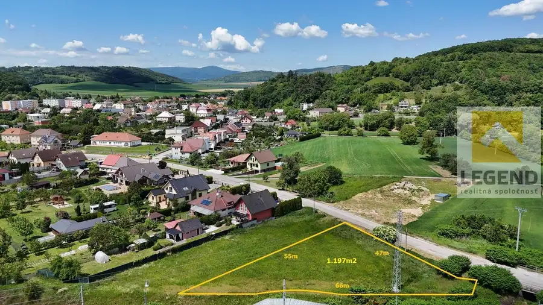
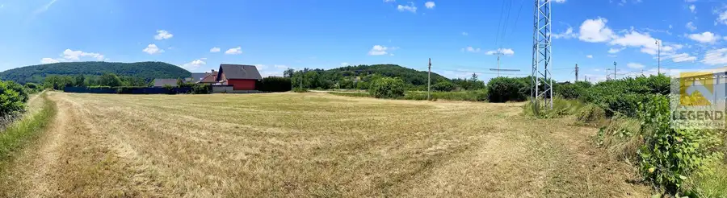
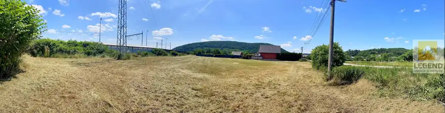
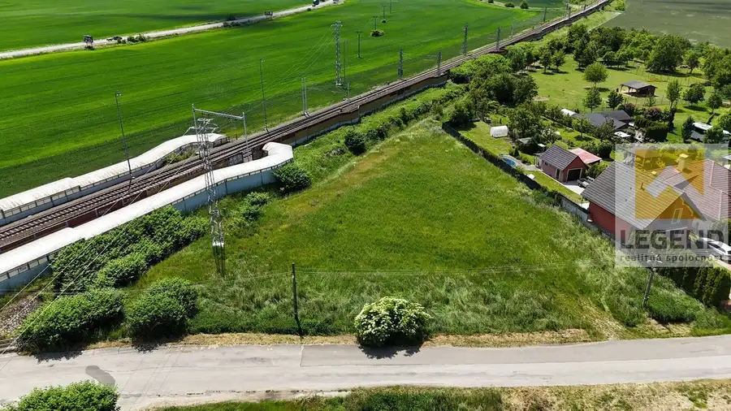
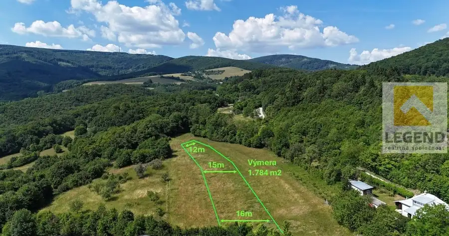
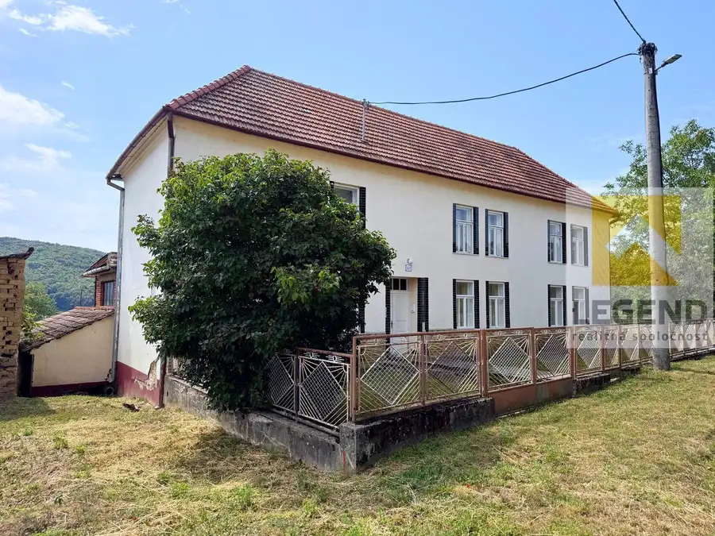
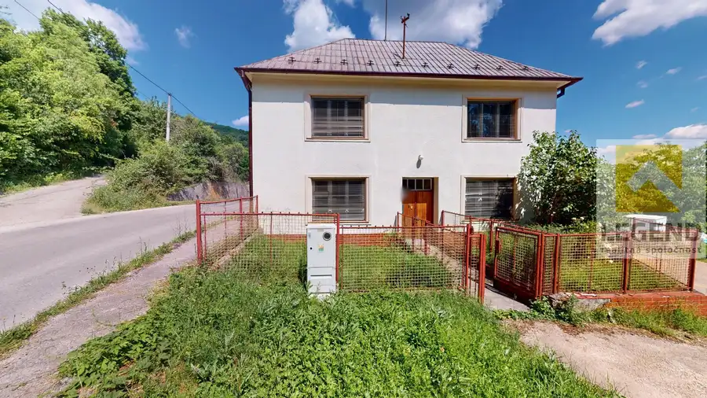

LEGEND - !!! Nová cena !!! - Slnečný stavebný pozemok v Tr.Bohuslaviciach - 1.197m2, IS dostupné
Trenčianske Bohuslavice




- Plocha1197 m²
O nehnuteľnosti
*** Zaujímavý tvar pozemku – Všetky IS dostupné – Prístup asfaltovou cestou ***Na predaj zaujímavý stavebný pozemok o výmere cca. 1.197 m² v obľúbenej obci Trenčianske Bohuslavice, len 6km od Nového Mesta nad Váhom, cca 7 km od diaľničného privádzača (D1) a 107 km od Bratislavy.Rovinatý pozemok trouholníkového tvaru, sa nachádza na okraji zabývanej výstavby ako posledný pozemok v ulici, s už vydaným súhlasom obce na výstavbu rodinného domu.- Elektrina na pozemku, voda v tesnej blízkosti- Prístup z obecnej asfaltovej cesty – bezproblémový aj pre nákladné vozidlá- Dostupnosť železničnou aj autobusovou dopravou- Neďaleká železnica lemovaná vybudovanou protihlukovou bariérou- Ochranné pásmo elektriny na konci pozemku zasahuje len minimálnu časť – bez obmedzenia výstavbyTiché a slnečné miesto s výbornou dostupnosťou do okresného mesta Nové Mesto nad Váhom aj ďalších dôležitých regiónov. Výhodou je pokojná lokalita a zároveň výborná dopravná napojiteľnosť – ideálne pre rodinné bývanie alebo ako investičný zámer na výstavbu dvojdomu.** Cena 82,-€/m2 - cena je vrátane všetkých poplatkov spojených s kúpou nehnuteľnosti **V prípade záujmu o ďalšie informácie Vám ich radi poskytneme na doleuvedenom kontakte.KONTAKT: Pavlína Talianová Tel. +421 917 633 285MAIL: talianova@legend.skTúto nehnuteľnosť exkluzívne predáva LEGEND realitná spoločnosť s.r.o., pobočka Nové Mesto nad Váhom, Námestie Slobody 9A (NATALI centrum) Tel. 032/7434159Chcete profesionálne predať svoj byt / dom / pozemok? Nestrácajte čas a kontaktujte nás!VOLAJTE NA ČÍSLO: 032/743415
Parametre
- Druh
- Pozemok pre rodinné domy
- Dátum zverejnenia
- 08. 08. 2025
- Dĺžka pozemku
- 47
- Elektrina
- Na pozemku - 230 V
- Odpadové vody
- Nedostupné
- Plocha pozemku
- 1197 m²
- Plyn
- Pri pozemku
- Pripravenosť k výstavbe
- Schválené v územnom pláne
- Terén pozemku
- Rovinatý
- Typ
- Predaj
- Voda
- Pri pozemku - Verejný vodovod
- Šírka pozemku
- 25
Kde to je


Mohlo by Vás zaujímať

PozemokNové 59 000 €LEGEND - Krásný pozemok v Lubine - vedľa Minifarmy, 1.784 m2, IS dostupné Lubina 1784 m²
Chalupa, rekreačný domčekNové 229 990 €LEGEND - !!! Znížená cena !!! - Jedinečná chalupa 8i+2 na kopaniciach vo Vrzavke - 14.202m2, hosp. budovy, 3x garáž, IS Bzince pod Javorinou 550 m²
DomNové 79 990 €LEGEND - Gazdovský dom 4i + 1 v Lubine - blízko Minifarmy, 2x dieľňa, veľký pozemok 869m2 Lubina 300 m²